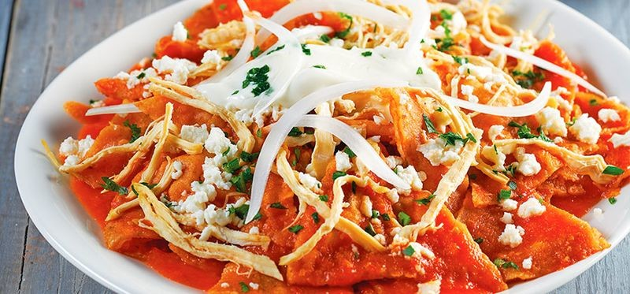

Recipe Chilaquiles

Los chilaquiles rojos son un delicioso desayuno mexicano infaltable en las cocinas familiares mexicanas.
Es por eso que hoy te compartimos una receta fácil para prepararlos en cualquier ocasión, aunque se consumen mucho para el desayuno.
Ingredients:
- 3 jitomates guaje
- 6 chiles guajillo limpios, semillas o venas
- 2 dientes de ajo
- 1/4 de cebolla
- 1 cucharada de aceite
- 2 ramas de epazote
- Sal al gusto
- 4 huevos
- 150 ml de aceite
- 400 g de totopos para chilaquiles
- 200 ml de crema ácida
- 250 g de queso fresco desmoronado
- 1/2 cebolla fileteada
- 2 tazas de frijoles negros refritos
Steps:
- Hierve los jitomates en agua durante 3 minutos.
- Añade los chiles guajillo y déjalos hervir por 2 minutos más.
- Retira del fuego los ingredientes y déjalos reposar hasta que se enfríen.
- Licúa los jitomates y los chiles con el agua donde hirvieron, junto con los ajos y la cebolla hasta obtener una salsa tersa.
- Cuélala y resérvela. Pon sobre el fuego una cacerola con el aceite; cuando esté caliente, añade la salsa, las ramas de epazote y la sal.
- Deja que hierva durante 5 minutos. Reserva.
- Coloca sobre el fuego una sartén con aceite.cuando esté caliente, prepare en él cuatro huevos estrellados, de uno en uno. Resérvalos. (Si prefieres puedes usar huevo revuelto o consumirlos sin proteina).
- Distribuye en platos los totopos y báñalos con la salsa caliente.
- Agrégales crema, queso y cebolla. Pon en cada plato un huevo frito, sobre los chilaquiles y si lo deseas acompáñalos con frijoles
Home
Home